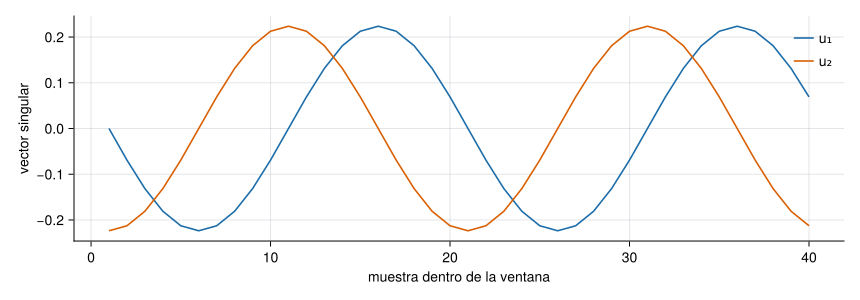

NotaUn poco de historia: de la dinámica no lineal a la identificación modal
La idea de colocar ventanas consecutivas de una serie temporal como columnas de una matriz y descomponerla con la SVD se usó en dinámica no lineal en los años ochenta para extraer información cualitativa de datos experimentales (Broomhead y King 1986); se desarrolló después como análisis de espectro singular (SSA) (Golyandina y Zhigljavsky 2013). En ingeniería estructural, el algoritmo de realización de autosistemas (ERA) de Juang y Pappa (1985) construye una matriz de Hankel con la respuesta impulsional del sistema para obtener frecuencias y amortiguamientos (Juang y Pappa 1985); los métodos de subespacios, como el SSI con sensores de referencia (Peeters y De Roeck 1999), trabajan con matrices de Hankel por bloques. Son familias emparentadas por el uso de una matriz con la misma forma, pero con contenido distinto: un error frecuente es tratarlas como una sola.
Fuentes: títulos y datos bibliográficos de los trabajos citados, cotejados con Crossref (25-10-2026); no se han leído los artículos completos.
Peeters, Bart, y Guido De Roeck. 1999. «Reference-based stochastic subspace identification for output-only modal analysis». Mechanical Systems and Signal Processing 13 (6): 855-78. https://doi.org/10.1006/mssp.1999.1249.
Juang, Jer-Nan, y Richard S. Pappa. 1985. «An eigensystem realization algorithm for modal parameter identification and model reduction». Journal of Guidance, Control, and Dynamics 8 (5): 620-27. https://doi.org/10.2514/3.20031.
Golyandina, Nina, y Anatoly Zhigljavsky. 2013. Singular Spectrum Analysis for Time Series. SpringerBriefs en Statistics. Springer. https://doi.org/10.1007/978-3-642-34913-3.
Broomhead, D. S., y Gregory P. King. 1986. «Extracting qualitative dynamics from experimental data». Physica D: Nonlinear Phenomena 20 (2–3): 217-36. https://doi.org/10.1016/0167-2789(86)90031-X.
Una matriz de Hankel es la que tiene las antidiagonales constantes: \(H_{ij}=h_{i+j}\). En esta página los índices empiezan en 1 y se escribe \(H_{ij}=h_{i+j-1}\) cuando importa dónde empieza la secuencia:
Una Hankel es una Toeplitz con las filas en orden inverso: \(\mathbf H=\mathbf J\mathbf T\) con \(\mathbf J\) la permutación que invierte el orden. Pero la propiedad que la hace útil es otra: el rango de una matriz de Hankel mide la complejidad de la secuencia.
Matriz de trayectoria y rango
Dada una serie \(x_1,\dots,x_N\) y una ventana \(L\), la matriz de trayectoria (embedding) es la matriz \(L\times K\), con \(K=N-L+1\), de columnas las ventanas \((x_j,\dots,x_{j+L-1})^{\mathsf T}\): \(H_{ij}=x_{i+j-1}\). Es de Hankel.
Teorema 1 (Rango y recurrencias lineales) Si la serie cumple una recurrencia lineal de orden mínimo \(d\), es decir, \(x_{t+d}=\sum_{j=1}^{d}c_j\,x_{t+d-j}\) para todo \(t\), entonces la matriz de trayectoria con \(L,K\ge d\) tiene rango exactamente \(d\).
Una sinusoide \(x_t=A\cos(\omega t+\varphi)\) cumple \(x_{t+1}=2\cos\omega\;x_t-x_{t-1}\), es una recurrencia de orden 2 y por tanto su matriz de trayectoria tiene rango 2. Una suma de \(p\) sinusoides de frecuencias distintas tiene rango \(2p\); y una sinusoide amortiguada, también rango 2. Con ruido, el rango numérico es completo, pero los valores singulares se separan: unos pocos grandes (la señal) y un «suelo» de valores pequeños (el ruido).
SSA: separar señal y ruido
El análisis de espectro singular reconstruye una señal con pocos componentes: (1) se construye la matriz de trayectoria, (2) se calcula su SVD, (3) se conserva el rango \(r\) elegido y (4) se vuelve a una serie promediando cada antidiagonal (la matriz de rango \(r\) ya no es de Hankel; el promedio es la proyección sobre las matrices de Hankel). La aproximación de rango \(r\) de (3) es la mejor posible en norma de Frobenius y en norma 2 (teorema de Eckart–Young, A3 (Eckart y Young 1936; Schmidt 1907)); el promediado de (4) no es óptimo, pero es el estándar.
Eckart, Carl, y Gale Young. 1936. «The Approximation of One Matrix by Another of Lower Rank». Psychometrika 1 (3): 211-18. https://doi.org/10.1007/BF02288367.
Schmidt, Erhard. 1907. «Zur Theorie der linearen und nichtlinearen Integralgleichungen». Mathematische Annalen 63 (4): 433-76. https://doi.org/10.1007/BF01449770.
Figura 1: Valores singulares de la matriz de trayectoria (\(L=40\), \(N=200\)): una sinusoide (rango 2), dos sinusoides (rango 4) y dos sinusoides con ruido blanco de desviación 0,2 (cuatro valores grandes y un suelo de ruido).
Con \(N=200\) y \(L=40\): una sinusoide da dos valores singulares de 40,2 y 40,0 y el tercero es 3e-14 (cero numérico); dos sinusoides dan cuatro; con ruido hay cuatro valores grandes (20,2 el cuarto) y un suelo de 3,7 en adelante. Reconstruir con \(r=4\) baja el error cuadrático medio respecto de la señal limpia de 0,207 a 0,055.
AdvertenciaLos valores singulares no son modos físicos
Una sinusoide da dos valores singulares iguales, no uno; una sinusoide amortiguada también. Dos frecuencias muy próximas, o una ventana \(L\) demasiado corta para resolverlas, se mezclan en un solo par. Y un valor singular grande indica una componente energética, no necesariamente un modo estructural: puede ser una armónica de excitación o una interferencia. Los valores singulares dicen cuántas componentes hay, pero no qué son.
El subespacio dominante
Las columnas de la matriz de trayectoria de una sinusoide son combinaciones de dos vectores: por eso los dos primeros vectores singulares izquierdos generan el mismo plano. Se ve en la Figura 2: son una senoide y una cosenoide de la misma frecuencia desfasadas un cuarto de periodo. Ese plano es el subespacio de señal del sistema.
Ver el código
Fv =svd(hankel_trayectoria(x_1, 40))fig =Figure(size=(860, 300))ax =Axis(fig[1, 1]; xlabel="muestra dentro de la ventana", ylabel="vector singular")lines!(ax, 1:40, Fv.U[:, 1]; color=AZUL, label="u₁")lines!(ax, 1:40, Fv.U[:, 2]; color=NARANJA, label="u₂")axislegend(ax; position=:rt, framevisible=false)fig

Figura 2: Los dos primeros vectores singulares izquierdos de la matriz de trayectoria de una sinusoide de 5 Hz (\(L=40\)): una senoide y una cosenoide de la misma frecuencia.
Cuatro matrices de Hankel que no son lo mismo
Tabla 1: Las cuatro matrices de Hankel de identificación. En las tres últimas, las entradas pueden ser bloques (si hay varios sensores).
covarianzas de salida \(\mathbf R_k=\mathbf C\mathbf A^{k-1}\mathbf G\)
\(\mathbf H=\mathcal O\,\boldsymbol\Gamma\), rango = \(n\)
identificación con excitación ambiental no medida
Datos (SSI-DATA)
bloques de datos pasados y futuros, sin estimar covarianzas
proyección de futuros sobre pasados, luego SVD
identificación a partir de los datos crudos
Las tres primeras filas comparten la mecánica algebraica: una matriz de Hankel que se factoriza como \(\mathcal O\,\mathcal C\) o \(\mathcal O\,\boldsymbol\Gamma\) (matriz de observabilidad por una de controlabilidad generalizada). Para \(\mathbf H_0=\mathbf U\boldsymbol\Sigma\mathbf V^{\mathsf T}\) de rango \(n\), se toma \(\mathcal O=\mathbf U\boldsymbol\Sigma^{1/2}\) y \(\mathcal C=\boldsymbol\Sigma^{1/2}\mathbf V^{\mathsf T}\); el desplazamiento \(\mathbf H_1\) (la misma Hankel adelantada una muestra) cumple \(\mathbf H_1=\mathcal O\,\mathbf A\,\mathcal C\), y de ahí sale
Los autovalores de \(\widehat{\mathbf A}\) son los polos discretos \(z_i=e^{s_i\Delta t}\), de los que se obtienen las frecuencias y los amortiguamientos (S3). La diferencia entre ERA y SSI-COV es qué datos se ponen en la Hankel y cómo se estiman; SSI-DATA trabaja directamente con los datos, con proyecciones, y no pasa por covarianzas. Los algoritmos completos son el tema de M7.5–M7.9.
Ejemplo 1Realización a partir de la respuesta impulsional. Dos osciladores desacoplados (2 Hz con \(\zeta=0{,}02\) y 5 Hz con \(\zeta=0{,}05\)) producen una respuesta impulsional de la que ERA recupera exactamente las frecuencias y los amortiguamientos, como muestra el código con la función era del paquete Resonancia. Con ruido, la estimación empeora, y depende del orden \(n\) elegido.
Ver el código
dt =0.01osc(f, z) = (ω =2π * f; [0.01.0; -ω^2-2z * ω])Ac = [osc(2.0, 0.02) zeros(2, 2); zeros(2, 2) osc(5.0, 0.05)]Bc = [0.0, 1.0, 0.0, 1.0]Cc = [1.00.01.00.0]Ad =exp(Ac * dt)Bd = Ac \ ((Ad - I) * Bc)hk = [(Cc * Ad^(k -1) * Bd)[1] for k in1:80]f_exacta, z_exacta =era(hk, 4, dt)# con ruido blanco de 1 % de la amplitud máximarng =Xoshiro(5)hruido = hk .+0.01*maximum(abs, hk) .*randn(rng, length(hk))f_ruido, z_ruido =era(hruido, 4, dt)nothing
Sin ruido: \(f=\) 2,000000 Hz y 5,000000 Hz y \(\zeta=\) 0,020000 y 0,050000. Con ruido del \(1\,\%\) de la amplitud: \(f=\) 2,002 Hz y 5,005 Hz y \(\zeta=\) 0,019 y 0,054. La frecuencia se estima con mucha más precisión que el amortiguamiento, que es la pauta habitual en identificación modal.
Ejemplo 2La misma Hankel con covarianzas. Si el oscilador de 2 Hz se excita con ruido blanco (que es la hipótesis habitual en identificación con excitación ambiental), no hay respuesta impulsional medida, pero sí se pueden calcular las covarianzas de salida \(\Lambda_k=\mathbb E[y_{t+k}y_t]\), y estas cumplen \(\Lambda_k=\mathbf C\mathbf A^{k-1}\mathbf G\) con \(\mathbf G=\mathbf A\boldsymbol\Sigma\mathbf C^{\mathsf T}\) y \(\boldsymbol\Sigma\) la covarianza de los estados: tienen la misma forma que los parámetros de Markov.
Ver el código
ω1=2π *2.0; ζ1=0.02A1 = [01; -ω1^2-2ζ1* ω1]Ad1 =exp(A1 * dt)Bd1 = A1 \ ((Ad1 - I) * [0.0, 1.0])Σ1=reshape((I -kron(Ad1, Ad1)) \vec(Bd1 * Bd1'), 2, 2) # covarianza de los estados (ecuación de Lyapunov)C1 = [1.00.0]G1 = Ad1 * Σ1* C1'Λ = [(C1 * Ad1^(k -1) * G1)[1] for k in1:60]f_cov, z_cov =era(Λ, 2, dt)nothing
Aplicando el mismo algoritmo a las covarianzas \(\Lambda_k\) se recupera \(f=\) 2,000000 Hz y \(\zeta=\) 0,020000: la excitación blanca desaparece de las ecuaciones porque solo afecta a \(\boldsymbol\Sigma\). Es la idea de SSI-COV; con datos reales, las \(\Lambda_k\) se estiman con una duración finita, y el error de estimación es lo que limita la precisión (M7.8).
Simulación 3. SSA. La señal es la suma de dos sinusoides de frecuencias \(f_1\) y \(f_2\) más ruido blanco, muestreada a 100 Hz. Prueba a poner \(f_2\) muy cerca de \(f_1\), a acortar la ventana \(L\) y a subir el ruido: observa cómo se pierde la separación de los valores singulares y cuándo la reconstrucción deja de ser buena.
Ver el código
viewof h_f1 = Inputs.range([1,20], {value:5,step:0.5,label:"f₁ (Hz)"})viewof h_f2 = Inputs.range([1,30], {value:12,step:0.5,label:"f₂ (Hz)"})viewof h_a2 = Inputs.range([0,1.5], {value:0.5,step:0.05,label:"amplitud de f₂ (relativa a f₁)"})viewof h_ruido = Inputs.range([0,1.5], {value:0.2,step:0.05,label:"ruido σ (unidades de la amplitud de f₁)"})viewof h_N = Inputs.range([64,400], {value:200,step:8,label:"muestras N"})viewof h_L = Inputs.range([8,60], {value:40,step:2,label:"ventana L"})viewof h_r = Inputs.range([1,10], {value:4,step:1,label:"rango retenido r"})
Ver el código
hk = {const fs =100, u =rng(77);const limpia =Array.from({length: h_N}, (_, t) =>Math.sin(2*Math.PI* h_f1 * t / fs) + h_a2 *Math.sin(2*Math.PI* h_f2 * t / fs));const x = limpia.map(v => v + h_ruido *normal(u));const L =Math.min(h_L, h_N -1);const {reconstruccion, valoresSingulares} =ssa(x, L,Math.min(h_r, L));const H =hankelTrayectoria(x, L);const err =Math.sqrt(reconstruccion.reduce((s, v, i) => s + (v - limpia[i]) **2,0) / h_N);const errRuido =Math.sqrt(x.reduce((s, v, i) => s + (v - limpia[i]) **2,0) / h_N);return {fs, limpia, x, reconstruccion,S: valoresSingulares, H, L, err, errRuido};}
md`**Error RMS** de la reconstrucción respecto de la señal limpia: **${hk.err.toFixed(3)}**; el del ruido sin tratar: **${hk.errRuido.toFixed(3)}** (${hk.errRuido>0? (hk.err/ hk.errRuido).toFixed(2) :"–"} del original). Con ${h_a2 >0&&Math.abs(h_f1 - h_f2) >0.5?"dos":"una"} sinusoide(s) distinta(s) cabe esperar rango ${h_a2 >0&&Math.abs(h_f1 - h_f2) >0.5?4:2}.`
NotaHipótesis y límites de la simulación 3
Las sinusoides son estacionarias y el ruido, blanco: es el caso más favorable para SSA. Si \(f_2\) está dentro de \(f_s/L\approx\) (en Hz) de \(f_1\), la ventana no resuelve las dos frecuencias y aparecen mezcladas; con ruido alto los valores singulares de señal se hunden en el suelo. La reconstrucción incluye el efecto de borde: las primeras y últimas muestras se promedian con menos términos y salen peores.
Construye la matriz de trayectoria de \(\mathbf x=(1,2,3,4,5,6)\) con ventana \(L=3\) (usa hankel_trayectoria(x, 3)) y escribe el elemento de la fila 2 y columna 3.
\(H_{ij}=x_{i+j-1}\), así que \(H_{2,3}=x_4=4\). La matriz completa es [1 2 3 4; 2 3 4 5; 3 4 5 6].
La señal \(x_t=\sin(2\pi\,5t)+0{,}5\sin(2\pi\,12t)\) se muestrea sin ruido y se forma su matriz de trayectoria con \(L\) y \(K\) de al menos 6. ¿Cuál es su rango?
Dos sinusoides de frecuencias distintas: \(2\times2=4\) (cada sinusoide cumple una recurrencia de orden 2, y las dos se suman). La figura de valores singulares lo muestra con cuatro valores grandes.
Cada valor singular grande de la matriz de trayectoria de una aceleración medida en una estructura corresponde a un modo de vibración.
Falso. Un modo (una sinusoide, amortiguada o no) da dos valores singulares; y valores singulares grandes pueden deberse a armónicos de la excitación o a interferencias. Los valores singulares indican cuántas componentes hay, no cuáles son físicas.
Referencias
Son las mismas que aparecen en el margen, junto al texto. La lista completa del curso, con el estado de verificación de cada ficha, está en recursos/bibliografia.bib del repositorio.
Broomhead, D. S., y Gregory P. King. 1986. «Extracting qualitative dynamics from experimental data». Physica D: Nonlinear Phenomena 20 (2–3): 217-36. https://doi.org/10.1016/0167-2789(86)90031-X.
Eckart, Carl, y Gale Young. 1936. «The Approximation of One Matrix by Another of Lower Rank». Psychometrika 1 (3): 211-18. https://doi.org/10.1007/BF02288367.
Golyandina, Nina, y Anatoly Zhigljavsky. 2013. Singular Spectrum Analysis for Time Series. SpringerBriefs en Statistics. Springer. https://doi.org/10.1007/978-3-642-34913-3.
Juang, Jer-Nan, y Richard S. Pappa. 1985. «An eigensystem realization algorithm for modal parameter identification and model reduction». Journal of Guidance, Control, and Dynamics 8 (5): 620-27. https://doi.org/10.2514/3.20031.
Peeters, Bart, y Guido De Roeck. 1999. «Reference-based stochastic subspace identification for output-only modal analysis». Mechanical Systems and Signal Processing 13 (6): 855-78. https://doi.org/10.1006/mssp.1999.1249.
Schmidt, Erhard. 1907. «Zur Theorie der linearen und nichtlinearen Integralgleichungen». Mathematische Annalen 63 (4): 433-76. https://doi.org/10.1007/BF01449770.